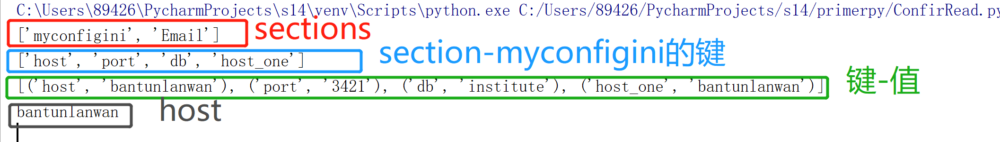

Python中一般需要配置文件，配置文件一般以.cfg, .conf, .ini结尾。配置文件可以将数据库抽离到以 .ini（Windows）结尾的文件中，这样做的优点在于可在配置文件中添加多个数据库，方便切换(另外配置文件也可以添加诸如邮箱、url等信息)。
1.配置文件中的符号：
（1）[sections] : 表示一个Section,配置文件中可以有多个section
（2）# : 表示注释说明
（3）=或： ：用来分隔key和value,两侧的空格会被忽略
（4）%(valueName)s ：表示值替换（注意，值替换需在同一个session，或原值在[DEFAULT]中）
2. 配置文件示例
（1）python使用自带的configparser模块用来读取配置文件，在使用前需要先安装该模块，使用pip安装即可，或者在pycham-setting-project interpreter-中点击右侧‘+’搜索相应模块，即可安装。
（2）创建配置文件 config.ini
[myconfig]
host=bantunlanwan
port=3421
db:institute
host_one=%(host)s
[Email]
host=https://hello.com
email=helloworld.qq.com
password=abc123
（3）读取配置文件,需要创建一个可执行脚本 config_read.py
import configparser
cf = configparser.ConfigParser()
cf.read("C:\\Users\\89426\\PycharmProjects\\s14\\primerpy\\myconfig.ini")
# 读取配置文件，如果写文件的绝对路径，就可以不用os模块
secs = cf.sections()
# 获取文件中所有的section(一个配置文件中可以有多个配置，如数据库相关的配置，邮箱相关的配置，每个section由[]包裹，即[section])，并以列表的形式返回
print(secs)
options = cf.options("myconfigini")
# 获取某个名为myconfigini的section所对应的键
print(options)
items = cf.items("myconfigini")
# 获取名为myconfigini的section所对应的全部 键值对
print(items)
host = cf.get("myconfigini", "host")
# 获取[myconfigini]中host对应的值
print(host)（4）配置文件读取运行结果：

学而为人，不至于谷
积而成善，无恶毫芒